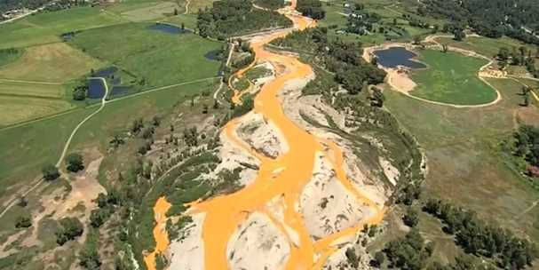

2015-08-19 04:39:00
我以前提過幾次，我是《The Economist》（《經濟學人》）的忠實讀者，已經訂閱了20多年。這倒不是因為它有客觀的評論；其實《The Economist》裡雙重標準的混淆邏輯和主觀偏見和英美的其他主流媒體一樣從頭貫串到底，例如它每期都有對當年的各國GDP成長率做預測，結果年復一年對中國的總是從低慢慢隨著年底的逼近向上調，對美國和印度的則必須反過來向下調，其對中國的敵意明顯易見。不過《The Economist》對資訊的蒐集和整理仍然在大眾刊物中首屈一指，所以雖然它不遵守客觀“邏輯”，對提供“事實”參考，還是很有助益的。
最近這期《經濟學人》對中日的二戰歷史又為安倍做了辯護。其實我對這類的文章，只要看看針對韓國和中國同樣是對日本不滿的受害國，以及日本和德國在戰後反省上的差異這兩個對比上着墨多少，就知道寫作人的立場是否偏頗。《經濟學人》的態度一向是假裝韓國不存在而專門歸罪中國對日本“挑剔”和“挑釁”，對日本和德國之間的反差更是能不提就不提。其實當初英國對德國宣戰而發動了一次大戰，打贏之後正是有《經濟學人》這類自私自利、搞雙重邏輯的刊物為國際金主當打手和幫兇，才促成了既不公平又極度短視的《凡爾賽合約》，很快引發了二戰（參見前文《一戰和冷戰》）。去年是一戰開始100週年，《經濟學人》一再發文將戰爭的責任往德國身上推，但是它的邏輯總結起來就是一句話：德皇對Serbia宣戰，所以強迫英國對德宣戰，因此戰爭是德國發起的。這種把自己提升到超越人類社會的高度而避免任何責任的論調，在客觀聽眾的耳裡顯然是胡扯；不過“勝利者的邏輯”是英美的歷史文化傳統，雖然臭氣沖天，但是對我來說也真是見怪不怪了。
所以我看《經濟學人》，重點不在它強調的幾篇社論，反而是在於一些地方性的消息和專業上的統計資料。最近這一期正有一篇文章叫做《Arsenic And Lost Face》（《砷與丟臉》，原文在這裡：http://www.economist.com/news/united-states/21661011-agency-charged-protecting-environment-pours-poison-it-arsenic-and-lost-face；《經濟學人》的編輯喜歡在選標題的時候玩諧音的文字遊戲，所以有時乍聽起來莫名其妙；這裡其實是仿效一部1944年美國老電影的名字《Arsenic And Old Lace》，由卡萊·葛倫主演），討論自2015年八月7日起，含有大量鉛和砷（Arsenic，又稱砒，即砒霜的主成分）的廢水從一個舊金礦裡以每分鐘740加侖（相當於2.8公噸）的速率洩入科羅拉多河的上游支流的一個事件。

亮黃色的含砷廢水流向科羅拉多河。
科羅拉多河可不是一般的河流，整個美國的西南部的飲用水和灌溉用水基本上就靠它。它流經的幾個州（包括南加州在內）都是沙漠氣候，只靠一條河從洛磯山帶來雪水養著2500萬人，所以被污染後的結果也就更嚴重。這次的污染先是自然發生的毛病，不過原本廢水洩入的速率被估計在每分鐘50到250加侖之間，八月7日是因為聯邦政府的環保局（EPA，Environment Protection Agency）試圖阻攔廢水流時弄巧成拙，才使整條河都成為亮黃色。當然人非聖賢，孰能無過；在工程上失敗總是有可能發生的。不過真正驚人的是不只我一個人在理性鎮靜地談這個事件，受影響的2000多萬民眾並沒有爆發大規模的街頭示威，整個事件被政府和傳媒低調處理，連第一版的新聞都上不了。我沒有看到媒體報導用上”Disaster“（”災害“）這個字眼，大部分如《經濟學人》用的是”Embarrassment“（”難堪“）一字。如果我們再考慮到19世紀下半和20世紀一直到EPA在1970年成立為止，這樣的嚴重水污染事件司空見慣，很多重金屬和有機污染物仍然累積在河底、地下水源和耕地，以致EPA自己承認美國350萬英里的河道裡仍有半數對支持水中生物有嚴重困難，那麼美國民眾的冷靜態度就更令人吃驚了。
當然美國的對內宣傳教化很徹底，國民在西方社會中是遠遠最愛國和最支持工業的，也就是我以前已經討論過的美式宣傳對外鼓動造反與對內強調秩序的反差。不過我們在做與台灣和中國這樣的新興經濟體的比較時，必須承認洗腦不是唯一的因素，美國人對法治的尊重和信任也是一個重要原因。不論出了多大的問題，不管政府機構捅出了什麼漏子，美國人在心底知道事情越是嚴重，就可以上法庭得到越是公平的審判和賠償（不過這只限於行政單位的漏子；近年來財閥控制了立法機構，循司法手段抑制大企業侵權的空間受了嚴重擠壓）。我在前文《美國式的恐龍法官（二）》裡曾做過比喻，說法治像是懸崖邊的手欄，是維護社會公平的最後保障。如果它有了公信力，就可以進一步保障社會秩序，預防民眾的驚慌推擠，這個事件是一個很好的例子。台灣在1980年代和1990年代對街頭運動過於美化，留下很大的遺毒，到今天已經惡化成沒人在乎要走體制內管道的地步。馬英九以為尊重司法就是放任恐龍法官自由心證，其實適得其反；法治的真正意義在於其公信力，也就是第一要有對達成公平結果的堅持，有了問題判決和人員，必須能對其做即時的修正；其次行政機構必須有決心和能力，強力導引任何爭議進入體制內的法治管道，否則就是將有極高價值的主權以零代價賣給暴民，那麼社會秩序的崩潰就成為必然的結果。習近平強調法治，正是從這個角度著眼，並不是如西方所希望的下放權力，而是反過來確保國家的主權和行政單位的公權力不被暴民和貪官所瓜分。台灣或許已經在滑梯上溜出太高的速度，不能馬上回頭，但是至少該嘗試著踩剎車吧。
【後註】亮黃色的河水最後並沒有出現在科羅拉多河的主流，這主要是因為這些重金屬只有在酸性環境下才能很好地溶於水，一但被沖淡了就開始沉積到河底。EPA目前的估計是總共洩漏了300萬加侖的廢水，相當於1萬多噸，所以重金屬大概有幾百噸，現在成為Animas河和San Juan河幾百公里長河底的黃色淤泥。